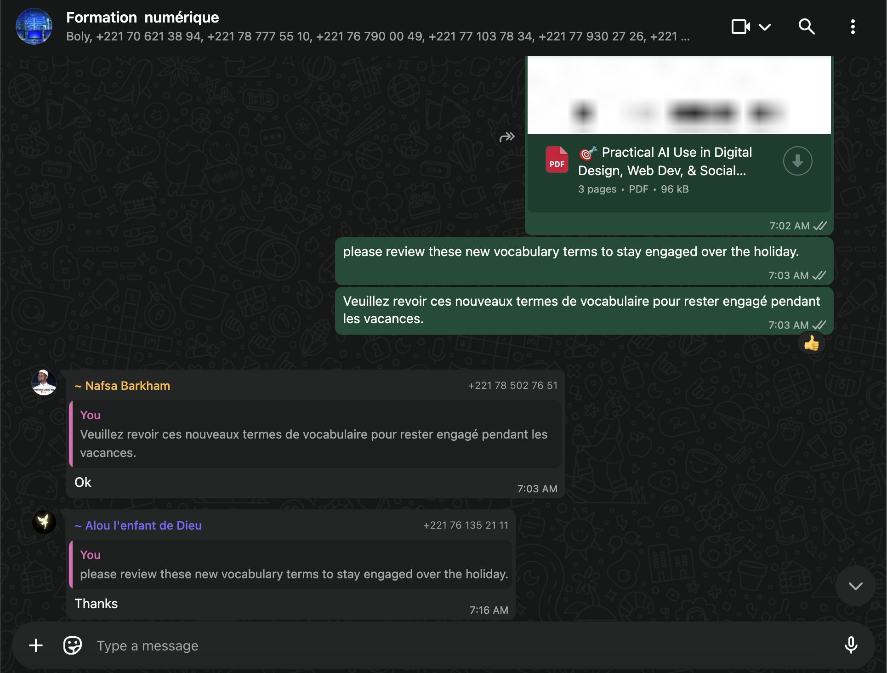
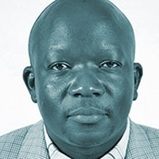

Who We Are
BinaryTree is a 501(c)(3) non-profit organization dedicated to bridging the digital divide and bringing quality technology education to underserved communities in developing countries.

Advisory Board
BinaryTree’s advisory board is composed of international community leaders who have helped us cultivate our values and establish ourselves as the world’s leading youth-led digital literacy nonprofit.
Gloria Anderson
Gloria is one of the kindest and most empathetic leaders you'll find. She's been with Binary Tree since day one and is the reason we thrive today.

Michael Nyawino
Michael is a respected grassroots organizer in Kenya and helped us establish strong international footholds. He embodies Binary Tree's values on a daily basis.
Current Initiatives
Tanzania Computer Lab Project
Raising $15,000 USD to establish a fully equipped computer lab that will serve more than 200 schoolchildren in rural Tanzania. This lab will provide students with access to modern technology and digital learning tools, helping to improve their computer skills, support their education, and open up new opportunities for their future..
Donate Here →Computer Donation Drive
Collecting computer and laptop donations from individuals and organizations across the United States and Canada to support underserved communities. Partnering with Drexel University in Pennsylvania to prepare devices for distribution.
Education Partnership with COHECF Kenya
Developing and implementing programming curriculum in Kenya, teaching key technical and digital skills to students in local schools and community centers. The curriculum includes:
- Scratch for Beginners, which helps students learn basic coding concepts by creating simple games and animations with visual blocks.
- Python Programming, which introduces text-based coding through variables, loops, and functions.
- Java Fundamentals, which teaches the basics of object-oriented programming and simple algorithms.
- Digital Literacy, which builds essential skills like typing, internet use, and working with documents.
Digital Literacy and Entrepreneurship Program in Senegal
Successfully completed a comprehensive 4-week digital literacy and entrepreneurship program in Senegal, empowering over 65 students with essential technology and professional skills. The highly interactive curriculum included:
- Week 1: Professional Development, which focused on resume building, job application strategies, and career preparation through interactive sessions and hands-on practice.
- Week 2: Understanding User Behavior, which explored the neuroscience behind app and website design, user attention patterns, minimalistic design principles, and aesthetically effective interfaces.
- Week 3: Social Media Marketing and Professional Communication, which covered advanced social media strategies for product and personal marketing, including Instagram and LinkedIn optimization, professional email writing, and graphic design using Canva.
- Week 4: AI Tools and Applications, which introduced various AI technologies including ChatGPT, image generators, and slide creation tools, emphasizing AI as a productivity tool while maintaining the importance of human creativity and effort.
Community Outreach
Building awareness through social media platforms like Instagram, Discord, YouTube, and LinkedIn by connecting with supporters and sharing the impact of our work.